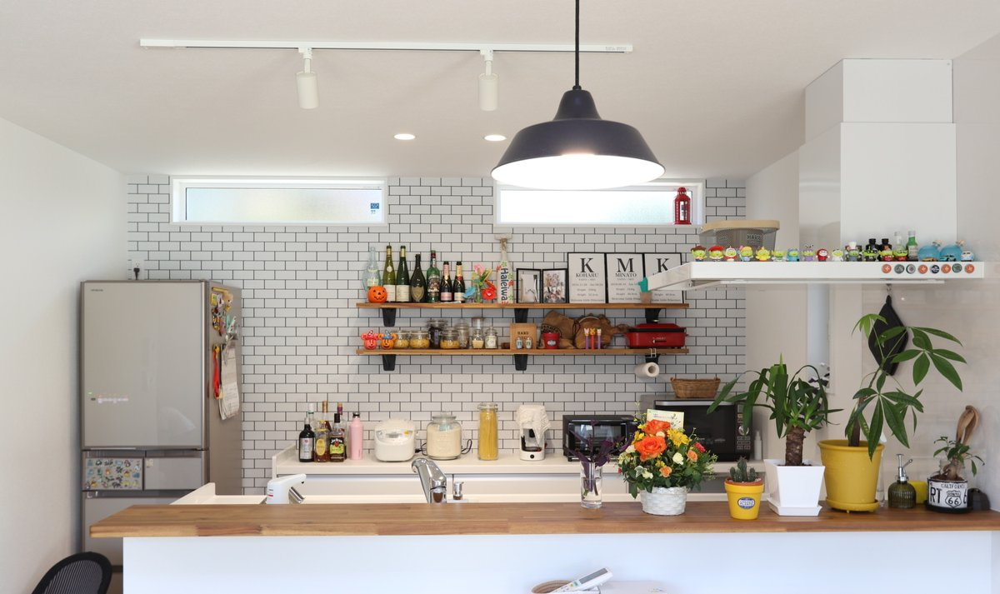

旧サイトに掲載していた取材記事より。
子供が生まれる前から一戸建てには住みたいねと夫婦で話していました。
子供が生まれると予想以上に手狭になってしまって、音などで周りに気を遣ってしまって必要以上に神経質に子供を怒ってしまうことが増えてしまい、毎日ストレスを感じてしまっていました。
そんな我慢している生活なのに家賃も払い続けるのも勿体無いと感じて、具体的に家づくりを始めました。
まずは住みたいエリアが大体固まっていたので、土地探しから始めましたポストに入る不動産のチラシや車で出かけているときに地域を走って空き土地を見てみたり、スマホで検索したりと色々しました。
建売住宅も見に行ったんですけど、間取りが少し気に入らなかったりで断念しました。
そこから違う工務店さんに相談に行ってたのですが、うまく話が進まなくてたまたま知り合いの水道業者さんが「シバサンいいと思うよ」と紹介してくれて、行ったのが初めてでした。
シバサンのスタッフさんは話やすくて、家の話をするのがとても楽しかったです。
あえて大変だったと言えば、土地探しを自分達で始めちゃったので、今考えると工務店さんに任せたらもっといろんな提案を貰えてたかもと思います。
あと壁紙の打ち合わせの時は、全部同じに見えてきて、ちょっと大変でした。
そんな時は、一回休憩して、もう少し頑張れば理想の家に住める！と思って乗り越えました。
一番は、2階のカラフルな扉です。
主寝室、子供部屋の4つそれぞれが異なるカラーの扉は心くすぐられますね。
何気なくインスタで投稿した時も、すごい反響があってちょっぴり誇らしかったです。
キッチンからの景色も好きなポイントで、キッチンから見渡した時のダイニングお庭と開けた景色がすごく気に入っています。
明るくて開放的で、海外のお家みたいです。
逆に夜はお庭から見えるキッチンが好きなハワイの雑貨などが照らされてちょっぴりバーな雰囲気があってとっても気に入ってます。
お庭の人工芝は、最初は絶対に天然芝にこだわってたんですけど、外構屋さんのおすすめもあって天然芝にしました。
実際には、子供が裸足で遊んでても気にならないし手入れもいらないので大成功でした。
お風呂場の棚、鏡はなくてもよかったかなぁと思います。
あまり使わないけど、掃除しないといけないので、ちょっとした後悔ポイントです。
そして、トイレが一か所しかないので、将来のことを考えると二つあっても良かったかもしれないです。
家づくりをして本当によかった引っ越しをして生活を始めて思った以上に、楽しいことがいっぱいありました。